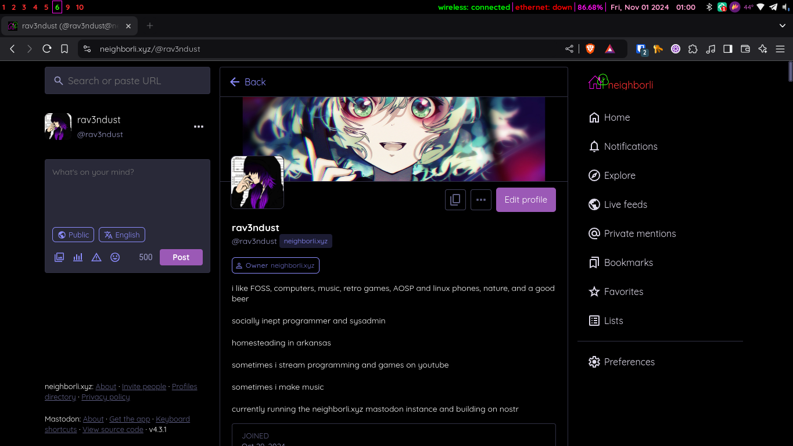

now | blog | wiki | recipes | bookmarks | contact | about | donate
* * * back home * * *
a dual approach
2024-10-30
This week, we have been working on moving our fediverse instance over from pleroma to mastodon. We ended up having to re-create the instance, and thought it would be fun to switch it up, so we now have neighborli.xyz on mastodon!
Setup was a breeze on Debian 12, and we have things setup about how we want them now. Doing some time with some writing a good bit of custom CSS and replacing some images here and there so everything matches our nightshadeNeon color scheme, it's ready for new users and welcomes all.
We run a pretty vanilla version of Mastodon for wide compability with all Mastodon clients. On some other points, we are connected to the toot.io relay in order to bring in more content and allow users more people to follow. Many Neighborli (and fediverse users in general) are into things like free software and technology, so you are likely to see quite a bit of things like that! :)
I've been on the fediverse for quite awhile now, think I joined my first server back in late 2018 or early 2019. I have enjoyed being on and building on the fediverse. The decentralized nature of the fediverse is its biggest strengths, but also one of its biggest flaws.
Right now, you're very dependent on whatever instance you join. If it's a hobby project ran by someone who isn't serious about keeping it up and letting their users know and come up with an way to migrate to preserve their data, they might shut down an instance and leave their users without their stuff, disgruntled and having to either find a new instance and start anew, or throw up their hands and go back to instagram and twitter.
When it comes to account portability, there has been one thing that has been great lately, and it's called nostr, or Notes and Other Stuff Transmitted by Relays. Like the fediverse, there are a ton of clients available, and anyone can create their own stuff and build on top of nostr, much like anyone can build on top of activitypub (the protocol that the fediverse is built on).
When it comes to identity on nostr, moving between different clients couldn't be easier. It follows the Bitcoin approach in a few ways: Instead of signing in and out of clients with different account credentials on different domains, like we do on the fediverse right now, nostr uses public and private keypairs.
On your first visit to most nostr clients, you will have the ability to generate a keypair. Save this keypair somewhere safe, and find a nostr identity handler app or extension you like. I use nos2x on Brave and nos2x-fox on Firefox. For mobile, I recommend Amber, a nostr identity app. With your keypair and your new extension or app, you can now sign into nostr client with the click of a button.
I am planning on picking up a domain for hosting a nostr client soon enough, when I can come up with a cool name for it! I'd like to host a client and a relay, and build some cool things on top of them. I like Nostr, and have been using it since not long after the first few clients came out. The nostr protocol is easy to understand and to implement, and I'm looking forward to building some things with it.
The fediverse and nostr are definitely my two favorite open and decentralized social platforms to build on and use. While they both have their issues, they are both more promising to me than any social platform owned by a single company or person that could be shut down at any time. This is the more impressive thing about nostr - if your favorite client goes down, your identity is safe - while I love the fediverse and will continue using and building on it right along with nostr, its biggest issue is account portability. Maybe in the future, this is something we will solve, and it won't be an issue in either space.
I'll update on here when I've got some repos open for some things to test on nostr. I look forward to continue building on the open social stack, and invite you to join us if you want to participate as well, whether you want to write some code or just join the conversation.
Mastodon's source code can be found here. Our modified version of Mastodon can be found here.
This week, I have been reading Sabriel by Garth Nix.